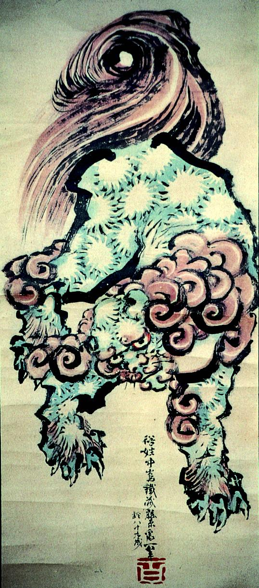

← 图鉴索引

蒼身赤毛の獅子。
著作者：葛飾北斎／出典：親書誌：A5_pushkin_0048：（獅子図；シシズ）／日付：2011／資源識別子：A5_pushkin_0048_0001_0000
Copyright (c)2010- International Research Center for Japanese Studies, Kyoto, Japan. All rights reserved.